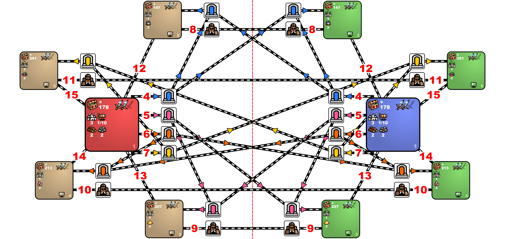

Small mirror with portals that work as one-way for host and two-way for guest player. No Resurrect, Animate, Air and Earth, but TP and DD are enabled. By Warzyw Max battle turns: 42 Last update: 13.01.2024

Settings
Features
| Index | Zones | Min | Max | Density | Min | Max | Density | Min | Max | Density |
|---|---|---|---|---|---|---|---|---|---|---|
| 147 | 2 | 2000 | 6000 | 12 | 13000 | 16000 | 6 | 100 | 3000 | 8 |
| 178 | Human zones | 2000 | 3500 | 8 | 4100 | 8500 | 8 | 12500 | 14000 | 8 |
| 207 | 3 | 2000 | 8000 | 12 | 20000 | 25000 | 6 | 100 | 3000 | 8 |
| 213 | 4 | 2000 | 10000 | 12 | 18000 | 25000 | 6 | 100 | 3000 | 8 |
| 261 | 5 | 2000 | 12000 | 12 | 23000 | 32000 | 6 | 100 | 3000 | 8 |
| Zone | Town rules |
|---|---|
| 3, 4, 5 | towns have same type as player towns of zone 2 |
| Zone | Percentage of monsters joining |
|---|---|
| Human zones | 100% |
| Computer zones | 25% |
| Rule Type | Object | Value | Frequency | Max per Zone | Max on Map |
|---|---|---|---|---|---|
| Disable | Sanctuary | ||||
| Disable | Random Resource | ||||
| Disable | Treasure Chest | ||||
| Disable | Campfire | ||||
| Disable | Hill Fort — any kind | ||||
| Disable | Trading Post | ||||
| Disable | Town Gate | ||||
| Enable / Edit | Eye of the Magi | default | 1500 | 1 | no limit |
| Disable | Prison — any amount of hero xp | ||||
| Enable / Edit | Prison — hero with 500000 xp | default | 60 | 10 | no limit |
| Disable | Windmill | ||||
| Disable | Water Wheel | ||||
| Disable | Mystical Garden | ||||
| Disable | Wagon | ||||
| Disable | Lean To | ||||
| Disable | Corpse | ||||
| Disable | Warrior's Tomb | ||||
| Disable | Scholar | ||||
| Enable / Edit | Pandora's Box with experience: 5000 | default | 10 | 2 | default |
| Enable / Edit | Pandora's Box with experience: 10000 | default | 10 | 1 | default |
| Enable / Edit | Pandora's Box with gold: 5000 | default | 10 | 2 | default |
| Enable / Edit | Pandora's Box with gold: 10000 | default | 10 | 1 | default |
| Rule Type | Object | Value | Frequency | Max per Zone |
|---|---|---|---|---|
| Disable | any warehouse | |||
| Enable / Edit | Warehouse of Wood | default | default | default |
| Enable / Edit | Warehouse of Ore | default | default | default |
| Disable | any of Wood/Ore/Mercury/Sulfur/Crystal/Gem/Gold | |||
| Enable / Edit | Wood | default | default | default |
| Enable / Edit | Ore | default | default | default |
| Disable | Sanctuary | |||
| Disable | any dwelling | |||
| Enable / Edit | Dwellings of level 1 | default | 200 | default |
| Enable / Edit | Dwellings of level 3 | default | 150 | default |
| Enable / Edit | Golem Factory (Stone, Iron, Gold, and Diamond Golem dwelling) | default | 150 | default |
| Disable | any creature bank | |||
| Enable / Edit | Crypt | default | default | default |
| Enable / Edit | Churchyard | default | default | default |
| Enable / Edit | Black Tower | default | default | default |
| Enable / Edit | Hut of the Magi | 1500 | 5000 | 1 |
| Disable | Eye of the Magi | |||
| Disable | Quest artifact for Seer's Hut of any kind | |||
| Disable | Pandora's Box of any kind | |||
| Enable / Edit | Pandora's Box with creatures of level 1 | default | 40 | 5 |
| Enable / Edit | Pandora's Box with creatures of level 3 | default | 40 | 5 |
| Enable / Edit | Ivory Tower | default | default | default |
| Disable | Warlock's Lab | |||
| Enable / Edit | Refugee Camp | 4000 | 100 | no limit |
| Enable / Edit | Spit | default | default | default |
| Enable / Edit | Ruins | default | default | default |
| Enable / Edit | Quest artifact for Seer's Hut with creatures of level 1 | default | 5 | 1 |
| Enable / Edit | Quest artifact for Seer's Hut with creatures of level 3 | default | 5 | 1 |
| Enable / Edit | Keymaster's Tent | 5000 | 10 | 1 |
| Enable / Edit | Keymaster's Tent | 7500 | 10 | 1 |
| Enable / Edit | Keymaster's Tent | 10000 | 10 | 1 |
| Enable / Edit | Ancient Altar | 10000 | 40 | 1 |
| Enable / Edit | Dragon Utopia | default | 40 | 2 |
| Rule Type | Object | Value | Frequency | Max per Zone |
|---|---|---|---|---|
| Disable | Dragon Utopia | |||
| Disable | any dwelling | |||
| Enable / Edit | Dwellings of level 2 | default | 200 | 6 |
| Disable | any warehouse | |||
| Enable / Edit | Warehouse of Mercury | default | 40 | 3 |
| Disable | any of Wood/Ore/Mercury/Sulfur/Crystal/Gem/Gold | |||
| Enable / Edit | Mercury | default | default | default |
| Disable | any creature bank | |||
| Enable / Edit | Imp Cache | default | default | 4 |
| Enable / Edit | Red Tower | 4000 | 100 | 3 |
| Enable / Edit | Mansion | default | default | 3 |
| Disable | Shrine of Magic Incantation (Level 1) | |||
| Disable | Shrine of Magic Gesture (Level 2) | |||
| Disable | Shrine of Magic Thought (Level 3) | |||
| Disable | (Level 4) | |||
| Disable | Spell Scroll — any level | |||
| Disable | Quest artifact for Seer's Hut of any kind | |||
| Disable | Pandora's Box with creatures of any kind | |||
| Enable / Edit | Pandora's Box with creatures of level 2 | default | 40 | 5 |
| Enable / Edit | Quest artifact for Seer's Hut with creatures of level 2 | default | 40 | 3 |
| Rule Type | Object | Value | Frequency | Max per Zone |
|---|---|---|---|---|
| Disable | Dragon Utopia | |||
| Disable | any dwelling | |||
| Enable / Edit | Dwellings of level 4 | default | 200 | 5 |
| Enable / Edit | Elemental Conflux (Dwelling for Air, Earth, Fire and Water elementals) | default | 200 | 5 |
| Disable | any warehouse | |||
| Enable / Edit | Warehouse of Sulfur | default | 40 | 3 |
| Disable | any of Wood/Ore/Mercury/Sulfur/Crystal/Gem/Gold | |||
| Enable / Edit | Sulfur | default | default | default |
| Disable | any creature bank | |||
| Enable / Edit | Medusa Stores | 2500 | default | 4 |
| Enable / Edit | Dragon Fly Hive | 6500 | default | 4 |
| Enable / Edit | Pirate Cavern | default | default | 3 |
| Disable | Spell Scroll — any level | |||
| Disable | Shrine of Magic Incantation (Level 1) | |||
| Disable | Shrine of Magic Gesture (Level 2) | |||
| Disable | Shrine of Magic Thought (Level 3) | |||
| Disable | (Level 4) | |||
| Disable | Pandora's Box with spells — any kind | |||
| Disable | Quest artifact for Seer's Hut of any kind | |||
| Disable | Pandora's Box with creatures of any kind | |||
| Enable / Edit | Pandora's Box with creatures of level 4 | default | 40 | 5 |
| Enable / Edit | Quest artifact for Seer's Hut with creatures of level 4 | default | 40 | 3 |
| Rule Type | Object | Value | Frequency | Max per Zone |
|---|---|---|---|---|
| Disable | Dragon Utopia | |||
| Disable | any dwelling | |||
| Enable / Edit | Dwellings of level 5 | default | 200 | 4 |
| Disable | any warehouse | |||
| Enable / Edit | Warehouse of Crystal | default | 40 | 3 |
| Disable | any of Wood/Ore/Mercury/Sulfur/Crystal/Gem/Gold | |||
| Enable / Edit | Crystal | default | default | default |
| Disable | Spell Scroll — any level | |||
| Disable | Shrine of Magic Incantation (Level 1) | |||
| Disable | Shrine of Magic Gesture (Level 2) | |||
| Disable | Shrine of Magic Thought (Level 3) | |||
| Disable | (Level 4) | |||
| Disable | Pandora's Box with spells — any kind | |||
| Disable | any creature bank | |||
| Enable / Edit | Dwarven Treasury | default | default | 4 |
| Enable / Edit | Wolf Raider Picket | default | 60 | 4 |
| Enable / Edit | Cyclops Stockpile | default | 80 | 4 |
| Disable | Quest artifact for Seer's Hut of any kind | |||
| Disable | Pandora's Box with creatures of any kind | |||
| Enable / Edit | Quest artifact for Seer's Hut with creatures of level 5 | default | 40 | 5 |
| Enable / Edit | Ancient Lamp | default | default | default |
| Rule Type | Object | Value | Frequency | Max per Zone |
|---|---|---|---|---|
| Disable | Dragon Utopia | |||
| Disable | any dwelling | |||
| Enable / Edit | Dwellings of level 6 | default | 200 | 3 |
| Disable | any warehouse | |||
| Enable / Edit | Warehouse of Gem | default | 40 | 3 |
| Enable / Edit | Mystical Garden | default | default | 7 |
| Disable | any of Wood/Ore/Mercury/Sulfur/Crystal/Gem/Gold | |||
| Enable / Edit | Gems | default | default | default |
| Disable | Spell Scroll — any level | |||
| Disable | Shrine of Magic Incantation (Level 1) | |||
| Disable | Shrine of Magic Gesture (Level 2) | |||
| Disable | Shrine of Magic Thought (Level 3) | |||
| Disable | (Level 4) | |||
| Disable | Pandora's Box with spells — any kind | |||
| Disable | any creature bank | |||
| Enable / Edit | Naga Bank | default | 90 | 3 |
| Enable / Edit | Griffin Conservatory | 3500 | 90 | 3 |
| Enable / Edit | Experimental Shop | default | 90 | 3 |
| Disable | Quest artifact for Seer's Hut of any kind | |||
| Disable | Pandora's Box with creatures of any kind | |||
| Enable / Edit | Quest artifact for Seer's Hut with creatures of level 6 | default | 40 | 5 |